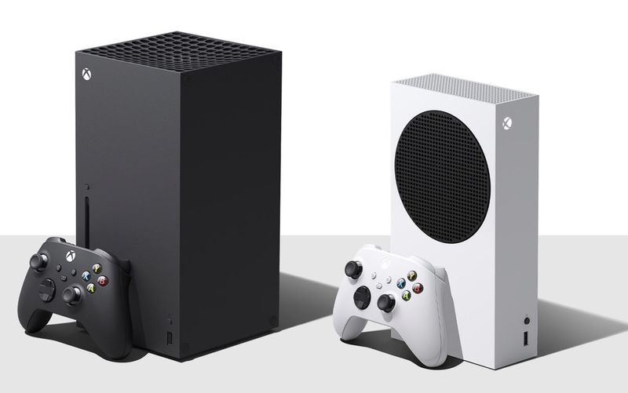

con nombre clave Project Café,es una consola descontinuada perteneciente a la octava generación de videoconsolas, siendo la séptima consola de sobremesa creada por Nintendo y directa sucesora de Wii. La consola fue lanzada el 18 de noviembre de 2012 en terreno norteamericano siendo su fecha de apertura.Se presentó en la conferencia de Nintendo durante el Electronic Entertainment Expo 2011 el 7 de junio de 2011.
Trailer de la Wii UWii U es la primera consola de Nintendo en producir gráficos en alta definición hasta una resolución de 1080p. Incluyó un nuevo mando que incorporó una pantalla táctil que recibía señal en calidad 480p de la consola, lo que permitió seguir jugando incluso cuando el televisor estaba apagado. A este nuevo mando se le ha denominado: Wii U GamePad. El sistema era retrocompatible con los juegos de Wii, y soportó los periféricos de Wii, como el Wiimote o la Wii Balance Board e incluyó la tecnología NFC,además de que fue compatible con las figuras y cartas amiibo como accesorio propio (también fue compatibles en la Nintendo 3DS, que modifican la forma de jugar videojuegos). Sin embargo, nunca fue retrocompatible con los periféricos de Nintendo GameCube (a excepción del mando que se conectaba mediante un adaptador) pero tuvo la capacidad de descargar los videojuegos desde la consola virtual.

es la cuarta videoconsola del modelo PlayStation. Es la segunda consola de Sony en ser diseñada por Mark Cerny y forma parte de las videoconsolas de octava generación. Fue anunciada oficialmente el 20 de febrero de 2013 en el evento PlayStation Meeting 2013, aunque el diseño de la consola no fue presentado hasta el 10 de junio en el E3 2013. Es la sucesora de la PlayStation 3, compite con Wii U de Nintendo y Xbox One de Microsoft. Su lanzamiento fue el 15 de noviembre de 2013 en Estados Unidos y Canadá, el 29 de noviembre se produjo su lanzamiento en Europa y Sudamérica, mientras que en Japón fue el 22 de febrero de 2014.
PS4 RevealAlejándose de la compleja arquitectura utilizada en el procesador Cell de la videoconsola PlayStation 3, la PlayStation 4 cuenta con un procesador AMD de 8 núcleos bajo la arquitectura x86-64. Estas instrucciones x86-64 están diseñados para hacer más fácil el desarrollo de videojuegos en la consola de nueva generación, que atrae a un mayor número de desarrolladores. Estos cambios ponen de manifiesto el esfuerzo de Sony para mejorar las lecciones aprendidas durante el desarrollo, la producción y el lanzamiento de la PS3. Otras características de hardware notables de la PS4 es que incluyen 8 GB de memoria unificada GDDR5, una unidad de disco Blu-ray más rápido y los chips personalizados dedicados a tareas de procesamiento de audio, vídeo y de fondo.

PlayStation 4 Pro se hizo pública el 7 de septiembre de 2016 y se lanzó en todo el mundo el 10 de noviembre de 2016. Su modelo es el CUH-7000. Se trata de una versión actualizada de la PlayStation 4 con hardware más potente que permite jugar a 4K (dependiendo del Software que se este corriendo) o renderizados mediante el proceso de Checkboard Rendering, además de una mejora en el rendimiento de PlayStation VR.
Incluye una GPU actualizada con 4,2 teraflops de potencia y con un reloj de CPU más alto, además de 1 GB de memoria adicional DDR3. PS4 Pro es compatible con vídeos 4K, pero no es compatible con Ultra HD Blu-ray, usando el lector Blu-ray convencional del modelo Slim.
Xbox One es la tercera videoconsola de sobremesa de la marca Xbox, producida por Microsoft. Forma parte de las videoconsolas de octava generación, fue presentada por Microsoft el 21 de mayo de 2013. Es la sucesora de la Xbox 360 y la predecesora de la Xbox Series X. Actualmente compite con PlayStation 4 de Sony y Wii U de Nintendo. Su salida a la venta fue el 22 de noviembre de 2013 a un precio de 499 dólares.
La consola está formada por un procesador AMD de 8 núcleos Custom de 64 bits basado en microarquitectura Jaguar y una velocidad estimada en 1,75 Ghz, 8 GB de memoria RAM DDR3 más 32 MB de ESRAM, con una velocidad de hasta 204 GB/s500 GB de disco duro y un lector Blu-ray 6x. Los gráficos integrados también corren por parte de AMD siendo 8 veces más potentes que los de Xbox 360 y compuestos por 5 000 000 000 de transistores, diez veces más que Xbox 360. Incluye además conexiones USB 3.0, HDMI in-out y 802.11n Wireless
Comercial en español Xbox OneLa consola tiene acceso a películas, televisión en vivo, música y un navegador web. La televisión tiene un aspecto similar a Google TV. La consola utiliza la señal de la caja de cable y pasa a través de la consola por HDMI. El jugador puede controlar la consola con comandos de voz. A estos comandos de voz responde el Kinect 2.0. También cuenta con Skype. El nuevo mando tiene un 17 % más de batería y un accesorio, que se utiliza para otras funciones del Kinect y también para las opciones de chat y volumen. Su remodelado sistema de vibración se llama Impulse Triggers. El nuevo Kinect tiene wake with voice. Tiene una cámara Full HD (1080p) comparado con el sensor VGA del anterior Kinect. Procesa 2 GB de datos por segundo con un tiempo de respuesta de 13 millonésimas de segundo.

El 13 de junio de 2016, Microsoft dio a conocer Xbox One S, la primera versión del equipamiento principal de Xbox One, para el lanzamiento en agosto de 2016. Cuenta con un factor de forma más pequeño, con una nueva carcasa blanca, tampoco es necesario el transformador gigante que incluían las versiones anteriores ya que este viene dentro de la consola y el reposicionamiento del botón de puerto lateral USB y controlador de sincronización directamente a la parte delantera de la consola, y la disponibilidad de un soporte para la organización vertical. Es compatible con la transmisión de vídeo 4K y Blu-ray Disc, alto rango dinámico (HDR), y tiene un disco duro de 500 gigabytes, o de 1, o de 2 terabytes.
| Consola | Venta de unidades |
|---|---|
| Wii U | 13.56 millones |
| Playstation 4 | 119.2 millones |
| Xbox One | 58.5 millones |
Nintendo Switch es una consola de videojuegos híbrida desarrollada por Nintendo y lanzada en todo el mundo en la mayoría de las regiones el 3 de marzo de 2017. La consola en sí es una tableta que se puede acoplar para usarla como consola doméstica o como un dispositivo portátil , lo que hace Es una consola híbrida . Sus controladores inalámbricos Joy-Con , con botones estándar y palancas analógicas direccionales para la entrada del usuario, detección de movimiento y respuesta táctil, se pueden conectar a ambos lados de la consola para admitir el estilo de juego portátil. También se pueden conectar a un accesorio de empuñadura para proporcionar una consola doméstica tradicionalforma de gamepad , o se puede usar individualmente en la mano como el Wii Remote y Nunchuk , compatible con modos multijugador locales. El software de Nintendo Switch admite juegos en línea a través de la conectividad a Internet, así como conectividad ad hoc inalámbrica local con otras consolas. Los juegos y el software de Nintendo Switch están disponibles tanto en cartuchos ROM físicos basado en flash como en distribución digital a través de Nintendo eShop ; el sistema no tiene bloqueo de región .
Parte de la inspiración de la forma y el diseño de Switch provino de los comentarios que los jugadores le habían dado a Nintendo sobre el control remoto de Wii , según Shinya Takahashi. Con el lanzamiento de juegos como Wii Sports y Wii Fit , los jugadores le preguntaron a Nintendo si podían hacer el Wii Remote en un factor de forma más pequeño, potencialmente atado a una parte de su cuerpo. Esto llevó a Nintendo a imaginar lo que un controlador de factor de forma más pequeño podría proporcionar tanto en hardware como en juego, y condujo a la idea de una consola que fuera lo suficientemente pequeña con estos nuevos controladores para que también fuera portátil.
Es una consola de videojuegos para el hogar desarrollada por Sony Interactive Entertainment . Se anunció como el sucesor de PlayStation 4 en abril de 2019, se lanzó el 12 de noviembre de 2020 en Australia, Japón, Nueva Zelanda, América del Norte y Corea del Sur, y se lanzó en todo el mundo una semana después. La PS5 forma parte de la novena generación de consolas de videojuegos , junto con las consolas Xbox Series X/S de Microsoft , que se lanzaron en el mismo mes.

El modelo base incluye una unidad de disco óptico compatible con discos Ultra HD Blu-ray . La Edición Digital carece de este impulso, ya que es un modelo de menor costo para comprar juegos solo a través de la descarga . Las dos variantes se lanzaron simultáneamente.
Las principales características de hardware de PlayStation 5 incluyen una unidad de estado sólido personalizada para la transmisión de datos de alta velocidad para permitir mejoras significativas en el rendimiento del almacenamiento, una GPU AMD capaz de mostrar una resolución de 4K a hasta 120 cuadros por segundo , trazado de rayos acelerado por hardware para una visualización realista. iluminación y reflejos, y Tempest Engine para efectos de audio 3D acelerados por hardware . Otras características incluyen el controlador DualSense con retroalimentación háptica , compatibilidad con versiones anteriores de la mayoría de los juegos de PlayStation 4 y PlayStation VR , y Auriculares PlayStation VR2 .
es una línea de videoconsolas de sobremesa desarrolladas por Microsoft y la cuarta generación de la familia de consolas Xbox. La familia de consolas, conocida colectivamente como "Project Scarlett" y revelada por primera vez en el E3 2019, incluye la Xbox Series X de gama alta, revelada en The Game Awards 2019 y cuyo nombre en código es "Project Anaconda", y la Xbox Series S de menor costo, anunciada en septiembre de 2020 y cuyo nombre en código es "Project Lockhart". Ambas consolas se lanzaron el 10 de noviembre de 2020 y compiten actualmente con la PlayStation 5 de Sony.
Ambas consolas suceden a la línea actual de Xbox One, reemplazando a los modelos insignia Xbox One X y Xbox One S de menor costo, respectivamente. Microsoft está priorizando el rendimiento del hardware, incluida la compatibilidad con resoluciones de pantalla más altas (resolución de hasta 8K) y velocidades de cuadro, trazado de rayos en tiempo real y uso de unidades de estado sólido de alta velocidad para reducir los tiempos de carga en la Xbox Series X. Xbox Series S usa la misma CPU, pero tiene una GPU, memoria y almacenamiento interno reducidos, también carece de unidad óptica.

Microsoft está promoviendo un enfoque centrado en el jugador para su nuevo hardware, que incluye actualizaciones gratuitas de versiones mejoradas de los juegos de Xbox One a través de su iniciativa "Smart Delivery", juegos optimizados para el hardware de la Series X y compatibilidad con versiones anteriores de juegos, controladores y accesorios de Xbox. La consola aprovecha su servicio de suscripción de juegos Xbox Game Pass, así como los juegos remotos en la nube en dispositivos móviles a través de su plataforma de juegos en la nube xCloud. Asimismo, Microsoft registró recientemente una nueva variante de la consola, llamada "XS", que está por definirse algunos detalles de la misma
| Consola | Venta de unidades |
|---|---|
| Nintendo Switch | 122.55 millones |
| Playstation 5 | 30 millones |
| Xbox Series X/S | 18.5 millones |
Si tiene dudas no dude en dejar su comentario por aca